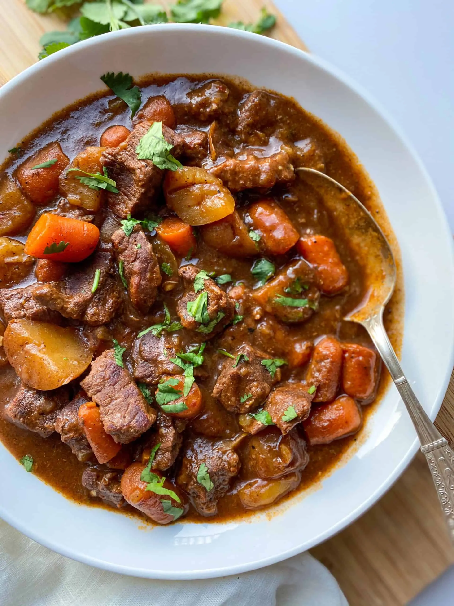

A warm dish for a cold eve, that is sure to have your feel warm and full. Perfect pick-me-up
Prep Time: 20minutes Cook Time: 4hr
Servings:6 Total Time: 4hr 20min
Mix flour, salt, and pepper together in a small bowl. Pour over meat,
and stir until meat is coated
Add beef broth, carrots, potatoes, onion, celery, Worcestershire sauce,
paprike, garlic, and bay leaf; stir to combine
Cover, and cook until beef is tender enough to cut with a spoon,
on Low for 8 to 12 hours, or on High for 4 to 6 hours.